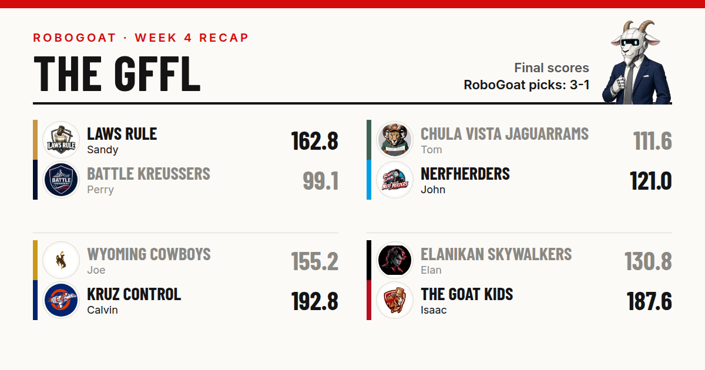
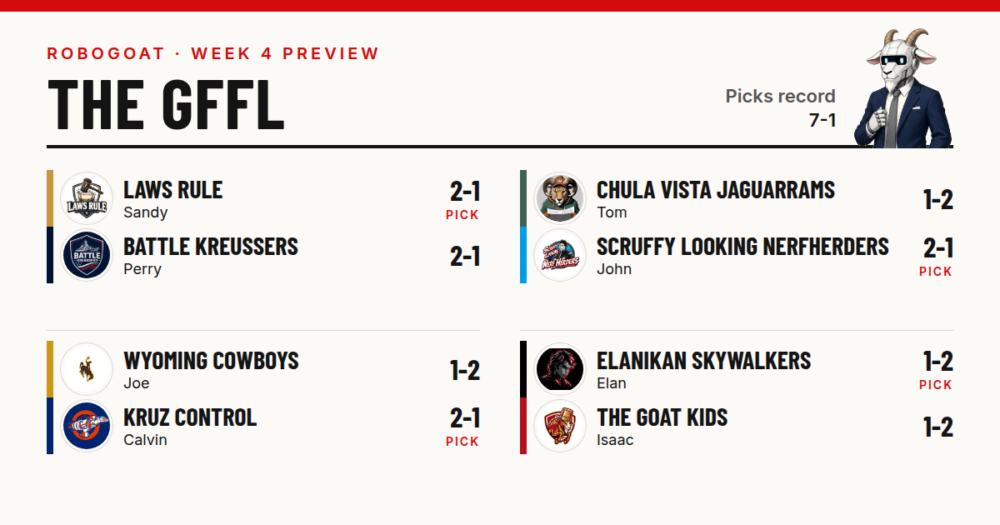
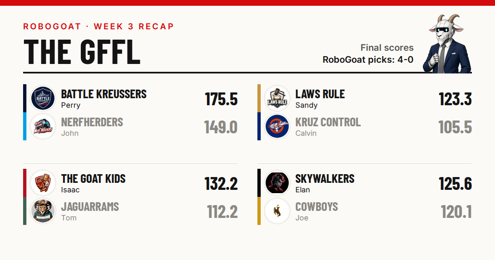

Joe’s Quarterback Completes 14 Passes to CalvinCalvin comes back from 15 percent on Joe’s quarterback, Sandy beats son #2, Perry’s two Robinsons score five touchdowns and two count, and Isaac writes in.
Sandy Is Praying to Beat Son #2Sandy is praying to beat son #2, John is starting a man who has been ruled out, Joe found a quarterback at 8:49 Saturday morning, and Isaac has 35.2 in the bank.
Perry Scores 175.5, and Sandy Wins on a Wednesday KickerPerry scores 175.5, Sandy beats Calvin on a Wednesday kicker, and RoboGoat goes 4-0.